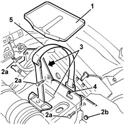

5530B60 battery fastening belt/retainers - replace
- Path
- Procedures > 55 ELECTRICAL EQUIPMENT > 5530 CURRENT GENERATOR > 5530B battery and leads > 5530B60 battery fastening belt/retainers - replace
- Kind
- repair procedure (removal / refitting; the operation number is the code)
- Applies to
- all engines; all production periods
- Interactive page
- https://sloeber94.github.io/elrnDB-a147/en/#/3025541
Applies to: all engines; all production periods
 Removing
Removing
 Refitting
Refitting1. Remove the battery drip tray.
2. Unscrew bolts (2a) and loosen bolt (2b) securing the battery cradle.
3. Move the battery cradle aside.
4. Release the belt retaining stud.
5. Remove the belt.

Applies to: all engines; all production periods
Refitting
RemovingCheck that the battery retaining belt is not damaged.
Fit the battery retaining belt and do up the retaining stud.
Fit the battery cradle and fix it using the bolts.
Position the battery drip tray.